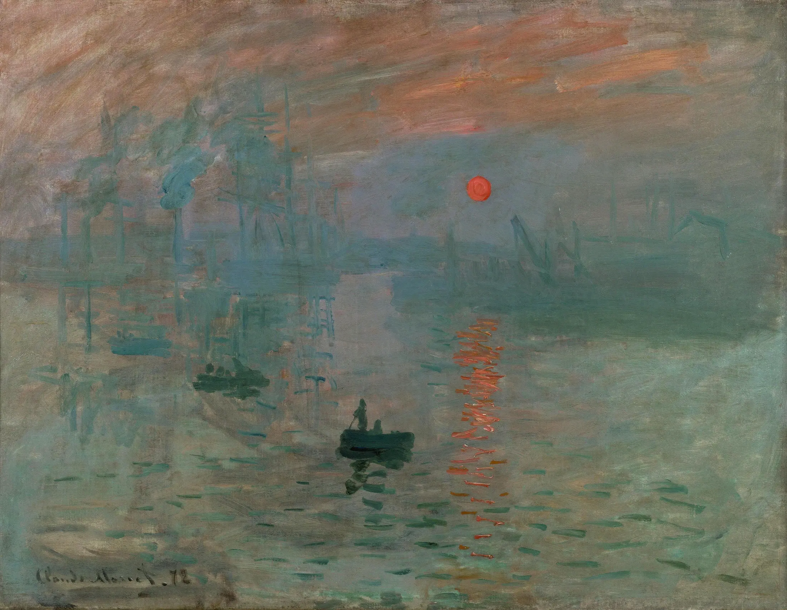
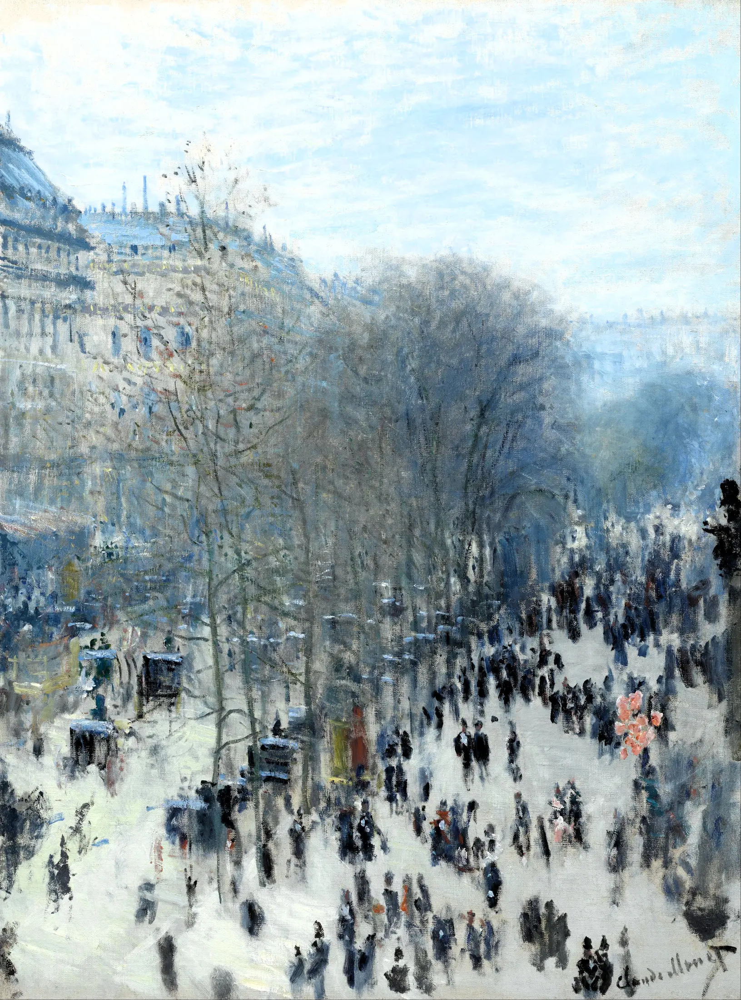
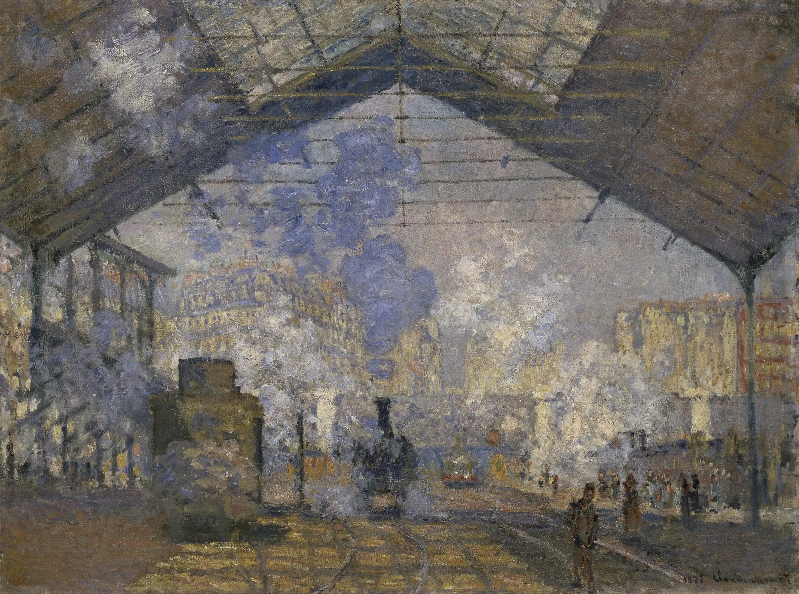
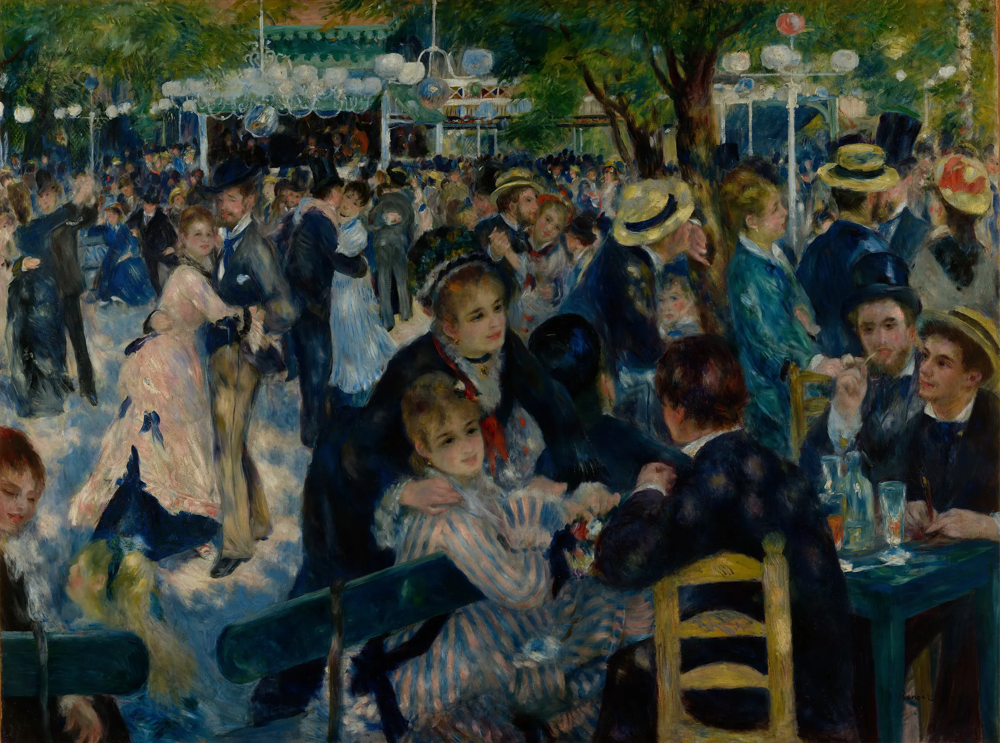
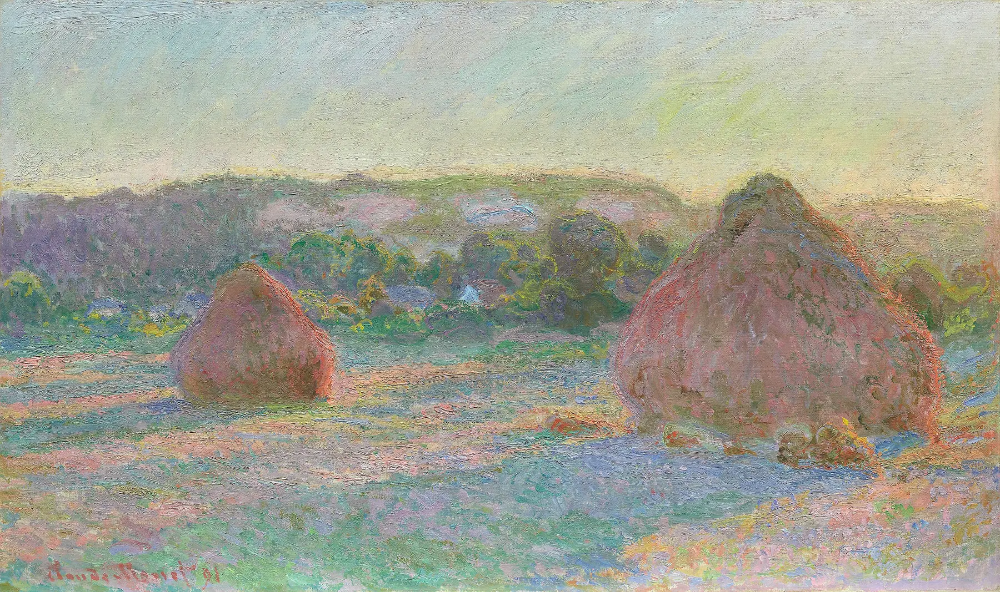

Il loisir presuppone tempo, reddito, abiti, trasporto e possibilità di occupare lo spazio pubblico.

14 · Prima di sapere
Quando la realtà diventa un istante?
Per ora niente titolo, autore, data o movimento. L’immagine deve prima resistere al tuo sguardo.
Che ora del giorno potrebbe essere?
Che cosa è solido e che cosa si dissolve?
Il sole è più luminoso o soltanto più intenso nel colore?
Viene prima il porto, la luce o l’atmosfera?
Da dove osserviamo?
Sembra incompiuto o deliberatamente instabile?
Quanto potrebbe durare questa scena?
Che cosa continua a muoversi mentre guardi?
02
Dal presente realistico alla percezione del presente
La domanda lasciata dal modulo 13
Il presente è entrato nell’arte. Ma non resta fermo.
Il Realismo aveva chiesto chi e che cosa meritassero di essere rappresentati: lavoro, persone comuni, città, conflitto sociale. Ora il problema si sposta. Non basta scegliere che cosa guardare: occorre capire come il mondo appare mentre cambia.

| Problema | Modulo 13 · Realismo | Modulo 14 · Impressionismo |
|---|---|---|
| Presente | Chi vi entra e con quale dignità? | Quanto dura mentre lo osserviamo? |
| Scena | Evento e condizione sociale. | Evento percettivo nel tempo. |
| Osservatore | Prende posizione scegliendo il soggetto. | È situato in un luogo, in un momento e in un accesso sociale. |
| Verità | Non è una copia neutrale. | Non è separabile dalle condizioni del vedere. |
Che cosa accade quando il presente, ormai entrato nell’arte, non può più essere trattenuto come una scena stabile?
03
Il mondo che rende possibile l’Impressionismo
Cronologia e rete causale
Nessun tubetto ha inventato un movimento. Una rete moderna cambia il vedere.
Boulevard, ferrovie, fotografia, colori trasportabili, guerre, esposizioni, mercato, stampe giapponesi e nuovi luoghi sociali interagiscono. Nessun nodo basta da solo e nessuna freccia è un destino.
Rete causale esplorabile
Seleziona un nodo e osserva quali possibilità apre, senza trasformarlo in causa unica.
Alternativa testuale alla rete
Città, mobilità, cultura visiva, materiali, istituzioni, crisi politica e mercato si condizionano reciprocamente. Le esposizioni indipendenti trasformano il rapporto con il pubblico; la ferrovia collega metropoli, periferie e luoghi di svago; fotografia e stampe giapponesi moltiplicano tagli e punti di vista; i materiali rendono alcune pratiche più agevoli, non obbligatorie.
04
Che cosa significa davvero “Impressionismo”?
Una parola, molte realtà
Non una ricetta di colori chiari. Un problema moderno della visione.
Il nome comprende un gruppo espositivo, una rete di artisti non uniformi, pratiche diverse, un’etichetta nata anche dall’ostilità critica e un modo nuovo di interrogare il rapporto fra percezione e tempo.
Impressioneprima organizzazione dell’esperienza
Sensazionerisposta dei sensi
Percezioneesperienza interpretata e situata
Istantetempo scelto e costruito
Atmosferacondizione che modifica ciò che appare
Modernitàritmi, luoghi e rapporti del presente
En plein airpratica importante, non regola assoluta
Gruppoalleanza espositiva, non stile unico
05
Laboratorio: l’istante non è spontaneo
Costruisci una particolare esperienza del tempo
Ogni impressione dipende da decisioni.
Modifica la stessa scena. Le variazioni non sono filtri casuali: ogni parametro corrisponde a una scelta percettiva, tecnica o sociale spiegata nel testo.
Simulazione concettuale: non imita né altera l’opera originale.
06
Monet: un porto, un sole, un nome diventato movimento
Le Havre · 1872 / esposizione · 1874
L’opera non rinuncia alla precisione. Sposta la precisione sulle relazioni.
Porto industriale, foschia, acqua, barche, riflessi e un piccolo segnale arancione convivono senza fondersi in un’immagine stabile. Il titolo fornì alla critica una parola; non creò da solo il gruppo.
Nessuno strato attivo.
25 aprile 1874
Louis Leroy usa “impressionisti” per colpire ciò che giudica incompiuto.
La recensione satirica pubblicata su Le Charivari lega polemicamente il titolo di Monet alla mostra della Société anonyme. Il termine circola e cambia valore, ma gli artisti non diventano per questo un blocco uniforme.
07
La metropoli entra nell’occhio
Boulevard des Capucines · 1873–1874
Dall’alto la folla diventa ritmo. Il balcone è anche una distanza sociale.
Monet osserva dal numero 35 del boulevard, nell’edificio di Nadar che ospiterà la mostra del 1874. Il taglio rialzato rende percepibili circolazione e velocità; protegge però l’osservatore e nasconde demolizioni, lavoro e biografie.

Nessuno strato attivo.
Che cosa vede un punto panoramico?
08
La stazione: luce, ferro, vapore
Gare Saint-Lazare · ciclo del 1877
La tecnologia non è soltanto un oggetto. Trasforma spazio, ritmo e atmosfera.
Monet dipinge dodici vedute note della stazione. La struttura di ferro e vetro organizza la luce; il vapore rende incerti i confini; i binari collegano centro, periferie e luoghi di svago. Otto tele furono pronte per la terza mostra del gruppo.

Nessuno strato attivo.
industria↔mobilità↔tempo misurato↔periferie↔svago
09
Il tempo libero non è libero per tutti
Bal du moulin de la Galette · 1876
La luce danza sui corpi. Il lavoro resta ai bordi dell’immagine.
Amici dell’artista, frequentatori, moda, consumo e sociabilità costruiscono un’immagine della modernità festiva. La scena fu lavorata soprattutto sul posto e completata in studio: l’effetto di immediatezza è una composizione.

Interroga la festa
Seleziona ciò che vuoi rendere visibile. Ogni domanda incrina l’idea di una “modernità felice” accessibile a tutti.
Servizio, manutenzione, produzione e cura sostengono la festa senza necessariamente occuparne il centro.
La folla produce ritmo, ma può trasformare individui e lavoratori in segni senza storia.
10
Donne, sguardi e spazi consentiti
Morisot e Cassatt
Essere visibili non significa muoversi liberamente.
Le artiste partecipano alle mostre e trasformano l’Impressionismo dall’interno. La loro esperienza sociale condiziona accessi, soggetti e punti di vista senza ridurre le opere a documenti biografici o a una “versione femminile” del movimento.
Costruisci la relazione dello sguardo
Seleziona una posizione per ciascuna domanda.
11
Dipingere lo stesso soggetto perché non è mai lo stesso
Covoni · 1890–1891
Il soggetto resta. L’apparizione cambia.
Le serie appartengono a una fase più tarda. Monet lavora davanti al motivo, passa da una tela all’altra e rielabora in studio. La ripetizione non dimostra spontaneità: rende confrontabili tempo, clima, luce e superficie.

Se il soggetto resta lo stesso ma ogni apparizione è diversa, dov’è la sua realtà?
12
Atlante comparativo: che cosa è cambiato nello sguardo?
Cinque immagini, venti categorie
Non cercare uno stile vincente. Segui ciò che ogni immagine rende possibile e ciò che esclude.
Seleziona una categoria: il confronto passa dal tempo tecnico del dagherrotipo all’istante di Monet, dalla metropoli alla sfera domestica, fino alla ripetizione seriale.
13
Ritorno all’immagine
Il primo sguardo resta visibile
Non hai ancora scritto un’annotazione.
Soglia verso il modulo 15
Registrare il visibile è ancora sufficiente?
Se la realtà cambia a ogni istante e dipende dal modo in cui viene percepita, l’arte dovrà cercare una struttura, una durata o una verità che l’occhio non consegna già pronta.
Vai alla soglia del modulo 15 →Verifica con recupero
Dodici nuclei, nessuna risposta lasciata indietro
Domanda 1 di 12
Fonti storico-artistiche e registro delle immagini
Le schede istituzionali fondano dati e interpretazioni. Wikimedia Commons è usato come deposito tecnico soltanto per riproduzioni dichiarate in pubblico dominio; le immagini dell’Art Institute sono CC0. Tutti i file necessari sono conservati localmente.
Claude Monet · Impression, soleil levant, 1872
Olio su tela, 50 × 65 cm, Musée Marmottan Monet, Parigi. File locale: impression-sunrise.webp. Scheda del museo · riproduzione, pubblico dominio.
{kind=link}
Claude Monet · Boulevard des Capucines, 1873–1874
Olio su tela, 80,3 × 60,3 cm, Nelson-Atkins Museum of Art, Kansas City. File locale: boulevard-capucines.webp. Approfondimento del museo · riproduzione, pubblico dominio.
{kind=link}
Claude Monet · Arrivo del treno dalla Normandia, Gare Saint-Lazare, 1877
Olio su tela, 60,3 × 80,2 cm, Art Institute of Chicago. File locale: gare-saint-lazare.webp. Scheda e immagine Open Access · riproduzione, pubblico dominio.
{kind=link}
Pierre-Auguste Renoir · Bal du moulin de la Galette, 1876
Olio su tela, 131 × 175 cm, Musée d’Orsay, Parigi. File locale: moulin-galette.webp. Scheda del museo · riproduzione, pubblico dominio.
{kind=link}
Berthe Morisot · Le Berceau / La culla, 1872
Olio su tela, 56 × 46,5 cm, Musée d’Orsay, Parigi. File locale: morisot-cradle.webp. Scheda del museo · riproduzione, pubblico dominio.
{kind=link}
Mary Cassatt · In the Loge, 1878
Olio su tela, 81,3 × 66 cm, Museum of Fine Arts, Boston. File locale: cassatt-in-the-loge.webp. Contesto del museo · riproduzione, pubblico dominio.
{kind=link}
Claude Monet · serie dei covoni, 1890–1891
Fine dell’estate, Fine del giorno, autunno e Tramonto, effetto di neve, Art Institute of Chicago. File locali: stacks-summer.webp, stacks-autumn.webp, stacks-snow.webp. Estate · Autunno · Neve. Dati e immagini CC0 / pubblico dominio.
Louis Daguerre · Boulevard du Temple, 1838
Dagherrotipo, Münchner Stadtmuseum. File locale: daguerre-boulevard.webp, già verificato nel modulo 13. Contesto storico · riproduzione, pubblico dominio.
{kind=link}